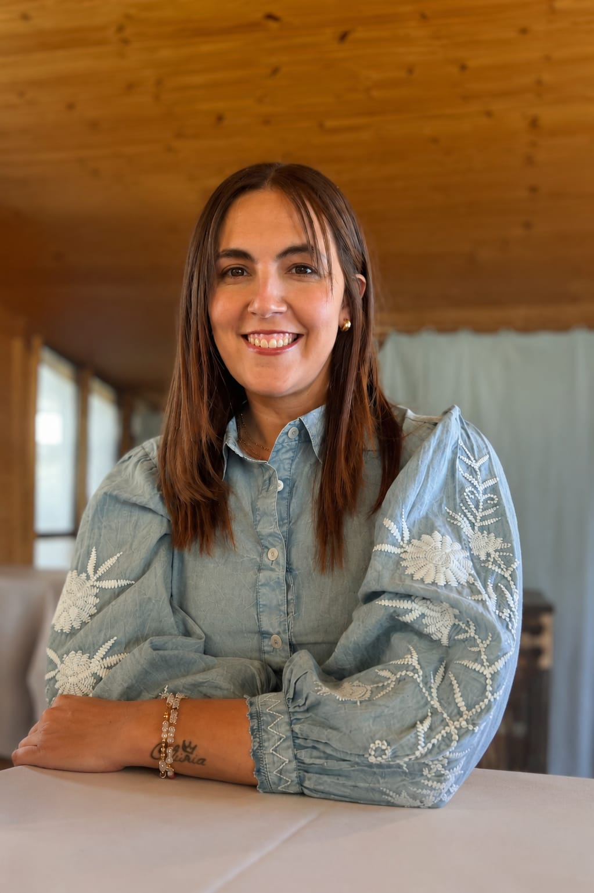

Momentos de crisis y cambio
Acompañamiento para atravesar situaciones difíciles, transiciones personales y etapas de incertidumbre.
Counseling online · Adolescentes y personas adultas
Te acompaño en momentos de crisis, cambios y de desarrollo personal desde una escucha activa, aceptante y libre de juicios.

Un proceso centrado en vos
Un espacio profesional para explorar lo que estás viviendo, reconocer tus recursos y avanzar con mayor claridad.
Acompañamiento para atravesar situaciones difíciles, transiciones personales y etapas de incertidumbre.
Un espacio para comprender lo que sentís, reconocer tus necesidades y conectarte con tus recursos.
Un proceso para fortalecer capacidades, revisar aquello que querés transformar y favorecer tu crecimiento.
Un espacio de reflexión para explorar alternativas y elegir con mayor conciencia y claridad.
¿Te identificás con alguna de estas situaciones?
Podemos conversar en un primer encuentro online sin cargo.

Sobre mí
Mi manera de acompañar se basa en una escucha activa, aceptante y libre de juicios, respetando la experiencia, los tiempos y la singularidad de cada persona.
Trabajo desde el Enfoque Centrado en la Persona (ECP), confiando en que cada ser humano cuenta con recursos y potencialidades que pueden desplegarse en un vínculo basado en la empatía, la aceptación y la autenticidad.
Acompaño de manera online a adolescentes desde los 13 años y a personas adultas. Cada proceso se construye de forma personalizada, a partir de lo que la persona necesita y desea trabajar.
Una profesión de ayuda
El Counseling o Consultoría Psicológica es una profesión de ayuda orientada al bienestar, la promoción y prevención de la salud y el desarrollo personal. Ofrece un espacio para explorar lo que estás viviendo, reconocer tus recursos y encontrar nuevas maneras de afrontar distintas situaciones de la vida.
A través de un vínculo basado en la escucha activa, la empatía, la aceptación positiva y la autenticidad, el Counseling facilita un espacio seguro donde la persona puede expresar su experiencia y comprenderse con mayor profundidad.
La tarea del counselor no consiste en dirigir la vida de quien consulta, sino en acompañar un proceso que permita reconocer necesidades, posibilidades y recursos para tomar decisiones de manera más consciente.
Se nutre principalmente de la Psicología Humanista, la filosofía existencial y otros aportes de las ciencias humanas vinculados con el desarrollo de las potencialidades personales.
Cómo son los encuentros
Ese primer espacio es sin cargo y permite conocernos, conversar sobre tu motivo de consulta y evaluar si esta modalidad de acompañamiento responde a tus necesidades.
Escribime por WhatsApp para realizar una primera consulta, conocer la modalidad de trabajo y coordinar nuestro primer encuentro.
Nos encontraremos por videollamada durante aproximadamente 45 minutos, en un espacio confidencial, tranquilo y pensado para que puedas expresarte con libertad.
Conversamos sobre tu motivo de consulta y evaluamos si este espacio responde a tus necesidades.
Preguntas frecuentes
Estas respuestas pueden ayudarte a conocer mejor la modalidad y el encuadre de trabajo.
No. También podés iniciar un proceso si deseás conocerte mejor, desarrollar tus recursos personales, fortalecer tu autoestima, revisar tus vínculos, tomar una decisión importante o contar con un espacio para reflexionar sobre distintos aspectos de tu vida.
Podés trabajar aquello que hoy esté generando malestar, dudas o el deseo de producir un cambio. Por ejemplo: cambios personales o laborales, conflictos en los vínculos, crisis vitales, procesos de duelo, autoestima, toma de decisiones, manejo de emociones o desarrollo personal. Cada proceso es único y se adapta a las necesidades de quien consulta.
El primer encuentro es gratuito y funciona como un espacio para conocernos. Podrás contarme qué te está pasando, qué te motivó a consultar y qué esperás del proceso. También podrás conocer mi forma de trabajar y resolver tus dudas. No necesitás preparar nada ni saber exactamente qué decir.
Trabajo con adolescentes a partir de los 13 años. Cada situación es única, por eso, antes de comenzar, realizo una primera entrevista con los adultos responsables y el/la adolescente para conocer el motivo de consulta y acordar la mejor forma de acompañar el proceso. El espacio es confidencial, para que pueda expresarse con libertad. El acompañamiento comienza solo cuando el/la adolescente también desea participar.
Lo conversado durante los encuentros se trata de manera confidencial, dentro de los límites éticos y legales de la práctica profesional. Al comenzar, acordamos la modalidad, los horarios y las condiciones del proceso. Si la situación requiere otro tipo de atención o un trabajo interdisciplinario, lo conversaremos para orientar una derivación adecuada.
Cada encuentro dura aproximadamente 45 minutos.
Sí. Actualmente se realizan mediante videollamada. Esta modalidad permite acceder al acompañamiento desde cualquier lugar, procurando cuidar la calidad del vínculo y la privacidad del espacio.
Un dispositivo con conexión a internet, un lugar tranquilo donde puedas hablar con privacidad y un momento en el que puedas dedicarte al encuentro sin interrupciones.
Si hay algo en tu vida que te gustaría comprender mejor, transitar de otra manera o necesitás un espacio donde sentirte escuchado/a, el Counseling puede ser una alternativa. El primer encuentro permite evaluar juntos si esta modalidad responde a lo que necesitás.
No. Este acompañamiento no funciona como servicio de emergencias ni de atención inmediata. Ante una situación de riesgo o urgencia, comunicate con los servicios de emergencia o con un centro de salud de tu localidad.
Primer paso
Escribime para coordinar un primer encuentro online sin cargo y conocer si este espacio es adecuado para vos.
Atención online para adolescentes desde los 13 años y personas adultas.
Este espacio no funciona como servicio de emergencias. Ante una situación de riesgo inmediato, comunicate con los servicios de emergencia de tu localidad.
Este sitio no solicita ni almacena datos personales mediante formularios. Al comunicarte por WhatsApp o Instagram, el tratamiento de la información también queda sujeto a las políticas de esas plataformas.
Los datos que compartas voluntariamente para realizar una consulta o coordinar un encuentro se utilizarán únicamente para responderte y gestionar ese contacto. Podés solicitar su actualización o eliminación por el mismo medio utilizado para comunicarte.